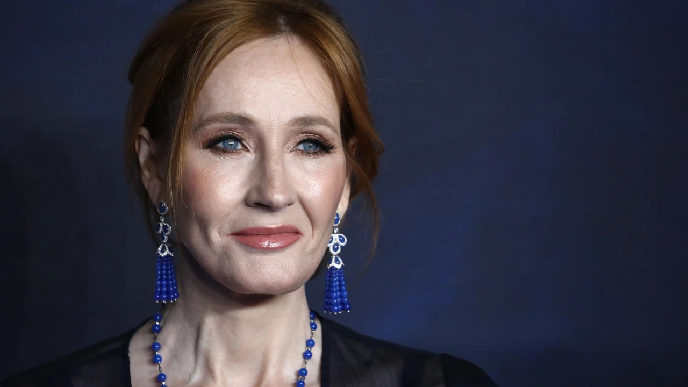

Biografia de J. K. Rowling
Joanne Rowling, mais conhecida pelo pseudônimo J.K. Rowling, é uma autora britânica nascida em 31 de julho de 1965, em Yate, Gloucestershire, Inglaterra. Ela é mundialmente famosa por criar a série de livros "Harry Potter", que se tornou um fenômeno literário e cultural.
Desde cedo a autora cultivava o gosto da leitura, e vários escritores despertaram na menina o desejo de ser uma escritora. Durante a infância ela nutria um amor incondicional por seus avós paternos, seus prediletos. Sua avó, Kathleen Ada Bulgen Rowling faleceu quando a garota tinha apenas 9 anos. Em sua homenagem, Joanne adota seu nome, representado pela letra ‘K’, para completar seu nome artístico – J.K. Rowling.
Atendendo aos apelos de seus genitores, a criadora de Harry Potter cursou Língua e Literatura Francesa na Universidade de Exeter, ao invés do curso de língua inglesa que pretendia fazer. Após sua graduação, ela deu sequência à formação na capital francesa, aí permanecendo durante um ano. Voltando à Inglaterra, começou a trabalhar na Anistia Internacional em Londres, como secretária bilingue e investigadora. Ansiando por concretizar seu sonho de escrever, deixou o cargo e foi para Portugal no ano de 1991.Durante esse período, ela começou a desenvolver a ideia para a série "Harry Potter".
Harry Potter
A inspiração para a história de Harry Potter surgiu enquanto ela estava a bordo de um trem a caminho de Londres em 1990. Ela começou a esboçar os detalhes do mundo mágico que se tornaria tão conhecido. Em 1997, o primeiro livro da série, "Harry Potter e a Pedra Filosofal" (também conhecido como "Harry Potter e a Pedra da Sabedoria" em algumas edições), foi publicado pela editora Bloomsbury no Reino Unido. A série rapidamente ganhou popularidade e conquistou fãs de todas as idades ao redor do mundo.

A série "Harry Potter" consiste em sete livros, que seguem as aventuras do jovem bruxo Harry Potter e seus amigos na escola de magia e bruxaria de Hogwarts. Os livros foram adaptados em uma bem-sucedida série de filmes e também inspiraram uma série de produtos relacionados, parques temáticos e peças de teatro.
Outros Trabalhos
Além da série Harry Potter, J.K. Rowling também escreveu outros livros, como "Morte Súbita" e a série Cormoran Strike sob o pseudônimo Robert Galbraith. Ela também se envolveu em várias causas sociais e filantrópicas.
J.K. Rowling é uma das autoras mais bem-sucedidas e influentes do mundo, e sua série "Harry Potter" deixou uma marca indelével na literatura e na cultura popular contemporânea. Ela continuou a escrever e se envolver em projetos significativos após o término da série Harry Potter, mantendo seu lugar destacado no mundo literário e além.